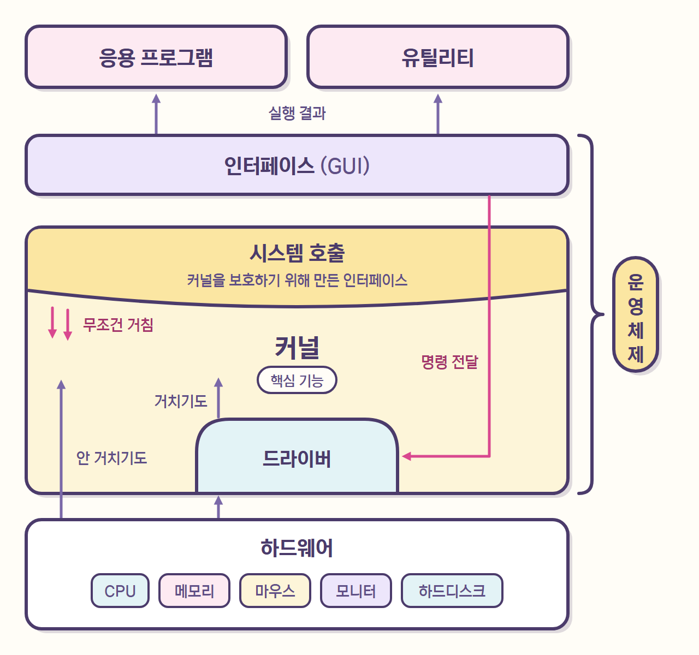

3.1.1
운영체제 목적과 역할
#운영체제의 목적과 역할
- 운영체제
- 정의 : 컴퓨터의 각종 자원을 효율적으로 관리 & 운영하기 위한 시스템 소프트웨어
- 목적 : 사용 편리성, 시스템 성능 향상
- 역할 : 사용 편리성, 사용자 환경 제공, 자원 할당, 제어 프로그램
- 기능: 프로세스 관리, 메모리 관리, 파일 관리, I/O 관리
- 연산 (커널과 시스템 호출)
- 커널
- 프로세스 관리, 메모리 관리, 저장장치 관리 같은 운영체제 핵심 기능을 모아놓은 것
- 단일형, 계층형, 마이크로 구조
- 시스템 호출
- 커널이 자신을 보호하기 위해 만든 인터페이스
- 사용자, 응용 프로그램이 자원에 직접 접근하는 것을 막음
- 커널
